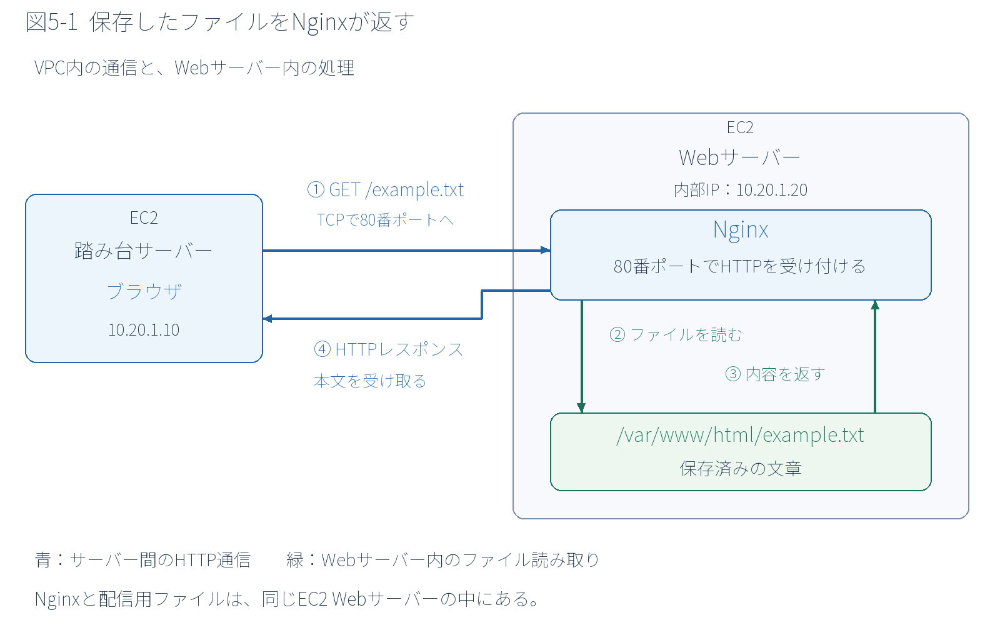
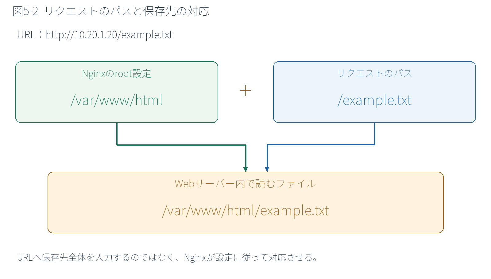
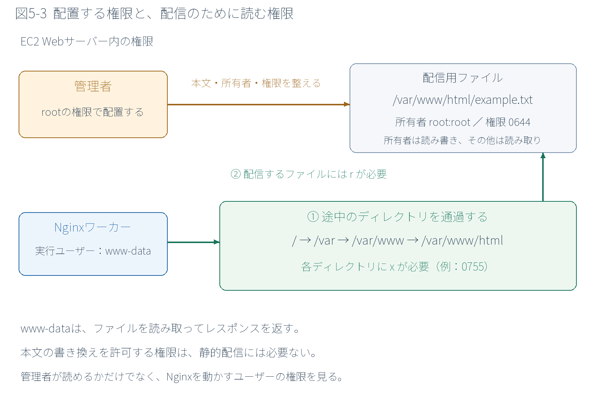
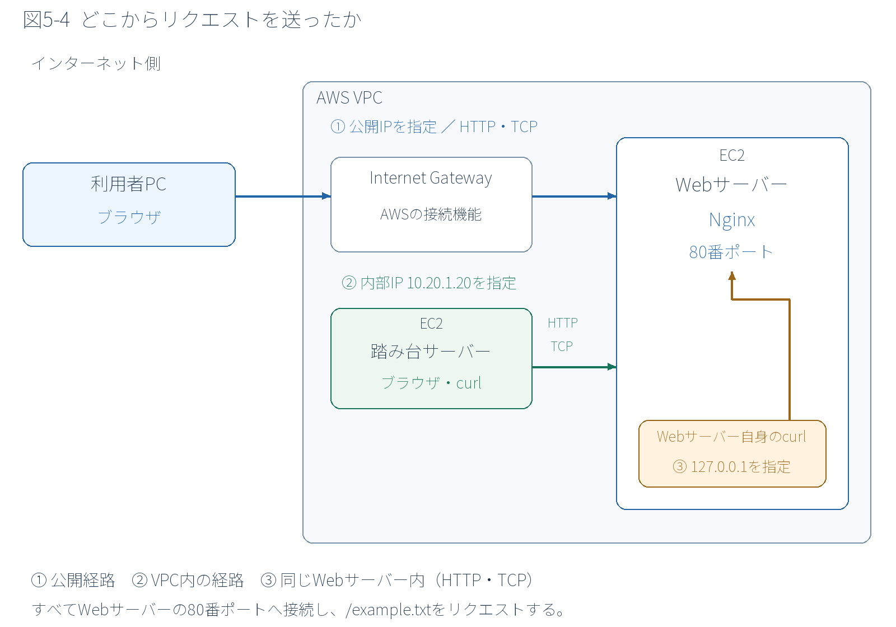

第5章 Nginxによる静的ファイルの配信
この章で分かること
学校の備品管理システムでは、ブラウザからのリクエストを受け取り、ページや画像などを返す入口が必要になる。今回は、Webサーバー上で動かすNginx（エンジンエックス）というソフトウェアが、その入口を担当する。
まずは短い文章を保存したファイルを使い、Nginxがその内容をブラウザへ返す仕組みを理解しよう。これを静的ファイルの配信という。ファイルの保存先、Nginxの設定、読み取り権限がどう結び付くかを学び、サービスの状態やログから動作を確かめる。
5.1 保存したファイルをHTTPで届ける
例えば、学校の備品管理システムの案内をexample.txtというファイルへ保存したとする。ファイルに書かれている文章は、次の一行である。
表示例：Webサーバーに保存する説明用ファイルの内容。
School inventory serverブラウザでこのファイルのURLを開くと、ブラウザはWebサーバーへGETのリクエストを送る。Webサーバー上のNginxは、そのリクエストに対応するファイルを保存領域から読み、内容をHTTPレスポンスの本文に入れて返す。ブラウザは受け取った本文を画面へ表示する。
このように、保存済みのファイルの内容を返す配信を静的配信という。テキストだけでなく、HTML、画像、画面の見た目を指定するCSSなども静的ファイルとして配信できる。ここでの「静的」は、保存した内容を使うという意味である。管理者がファイルを書き換えれば、以後に取得する内容も変わる。

図5-1 静的ファイルの内容がブラウザへ届くまで。 左は踏み台サーバー上のブラウザ、右はEC2 Webサーバーである。青い矢印はVPC内のHTTP通信、緑の矢印はWebサーバー内でのファイルの読み取りと内容の受け渡しを示す。Nginxとファイルは、どちらも右側のWebサーバーの中にある。
後の章では、備品データをDBから読み、その値を使って一覧ページを作るアプリを接続する。まず本章では、保存済みの文章をそのまま届ける流れに注目する。
5.2 NginxをWebサーバー上で動かす
EC2とNginxは何を担当するか
EC2 Webサーバーは、Ubuntu OSが動く仮想的なコンピューターである。Nginxは、そのUbuntu OSに導入して使うソフトウェアである。EC2が動いていても、Nginxが導入・起動されていなければ、NginxによるHTTPの受付は始まらない。
今回の構成では、必要なパッケージを配布サーバーから取得する。Webサーバー上のAPTが内部の配布サーバーへ接続し、Nginxなどのパッケージを導入する。パッケージを取得する通信と、導入後のNginxがブラウザにファイルを配信する通信は、目的も相手も異なる。
導入、起動、自動起動を分けて考える
パッケージを導入すると、Nginxのプログラムや初期設定などがWebサーバーへ配置される。サービスを起動すると、そのプログラムがプロセスとして動き、設定されたポートで接続を待ち受ける。自動起動を有効にすると、次回Ubuntu OSが起動したときにもサービスを起動するよう登録される。systemdのサービス管理
Ubuntu OSでは、systemdがnginxという名前のサービスを管理する。Nginxには、設定を読み込んで全体を管理するマスタープロセスと、実際のリクエストを処理するワーカープロセスがある。ファイルを読み、ブラウザへ返す処理はワーカープロセスが担当する。Nginxのプロセス構成
| 対象 | 確かめること |
|---|---|
| 導入したパッケージ | Nginxのプログラムや設定ファイルが配置されているか |
| サービスの現在の状態 | 今、Nginxが起動しているか |
| 自動起動の設定 | 次にUbuntu OSが起動したときもNginxを起動するか |
| 待受の状態 | WebサーバーのどのIP・ポートで接続を受け付けているか |
5.3 URLのパスとファイルの保存先を対応させる
設定ファイルは配信方法を決める
ブラウザは、Webサーバーの保存領域から直接ファイルを探しているわけではない。例えばhttp://10.20.1.20/example.txtを開くと、HTTPのリクエストで伝わる対象のパスは/example.txtである。Nginxは設定に従って、このパスをWebサーバー内の保存先へ対応させる。
今回のUbuntuでは、中心となる設定ファイルは/etc/nginx/nginx.confである。その中から別の設定ファイルも読み込む。初期のWebサイトの設定は/etc/nginx/sites-available/defaultにあり、/etc/nginx/sites-enabled/defaultから参照されることで有効になる。sites-enabledの参照はシンボリックリンクであり、別の設定内容をもう一組保存しているわけではない。UbuntuのNginx設定
四つの設定を短い例で読む
次は、配信方法を読むためのserverブロックの例である。nginx.confのhttpブロック内から読み込まれる設定の一部分として示している。
設定の説明例：80番ポートで受け付け、/var/www/htmlを基準にファイルを探す。
server {
listen 80;
root /var/www/html;
location / {
try_files $uri $uri/ =404;
}
}serverは、Webサイトとして受け付ける接続や処理をまとめるブロックである。listen 80は、Webサーバーの80番ポートで接続を受け付ける指定である。rootは、配信するファイルを探す基準のディレクトリを指定する。locationは、リクエストのパスに対応する処理をまとめるブロックである。
この例のlocation /は、/から始まるパスを扱う。中のtry_filesでは、$uriに入るリクエストのパスからファイルを探し、続いて$uri/でディレクトリを探す。どちらも見つからなければ404を返す。例えば/example.txtなら、rootの値と組み合わせた/var/www/html/example.txtを最初に探す。rootと保存先の対応、try_files

図5-2 URLのパスから保存先が決まる。 root /var/www/htmlという設定と、/example.txtというリクエストのパスを組み合わせる。Nginxが読むファイルは、Webサーバー内の/var/www/html/example.txtである。
このため、作業用ディレクトリにexample.txtを作っただけでは、上の設定でそのファイルは配信されない。ファイルを配信用の保存先に配置し、URLのパスと対応させる必要がある。また、URLの/と/example.txtは異なる対象である。/を開いたときは、設定に応じてindex.htmlなどの初期ページが表示されることがある。
設定内のrootという語は、ファイルを探す基準を表す。Linuxの管理者ユーザーであるrootとは、使われている場面と意味が異なる。
5.4 Nginxがファイルを読める権限にする
Nginxは、操作している自分の権限でファイルを読むとは限らない。今回のUbuntuでは、リクエストを処理するワーカープロセスはwww-dataというユーザーで動く。管理者が読めるファイルでも、www-dataが読めなければ配信できない。
例えば、配信用ファイルをroot:rootの所有、0644の権限にした場合、所有者のrootは読み書きでき、その他のユーザーは読み取りができる。www-dataはその読み取り権限で内容を取得する。配信するだけなら、www-dataに本文を書き換える権限を与える必要はない。
さらに、ファイルそのものを読めるだけでは足りない。/var/www/html/example.txtへ到達するには、途中にある/、/var、/var/www、/var/www/htmlの各ディレクトリを通過する権限が必要である。ディレクトリのxは、このように名前を指定して中へ進むための権限を表す。ファイルをプログラムとして実行する権限とは、対象が異なる。Linuxのパス探索と権限

図5-3 管理者が配置し、Nginxが読む。 上側は管理者による配信用ファイルの配置、下側はwww-dataによる読み取りを示す。ディレクトリの通過にはx、本文の読み取りにはファイルのrが必要になる。例では、途中のディレクトリは0755、ファイルは0644である。
配信用ファイルには読み取りを許可する一方で、パスワードや秘密鍵などを同じ公開用ディレクトリへ置かない。rootで指定した配信範囲には、利用者へ届けるファイルだけを配置する。
5.5 保存した設定をNginxへ反映する
構文を調べてから再読み込みする
設定ファイルを保存しても、起動中のNginxがすぐに新しい設定へ切り替わるわけではない。まず設定を検査し、その後にreload（再読み込み）で起動中のサービスへ反映する。設定を読む検査と、動作中のサービスへの反映を分けて考えよう。
実行場所：Webサーバーの管理用端末。設定の検査と再読み込みに使うコマンドの例。
sudo nginx -t
sudo systemctl reload nginx上の2行は、1行目の検査に成功したことを確認してから2行目へ進む。nginx -tの-tは、設定の構文と参照するファイルを検査するオプションである。例えばセミコロンが欠けていれば、問題のあるファイル名や行番号が表示される。syntax is okとtest is successfulは、検査が成功したときの表示である。Nginxの検査オプション
systemctl reload nginxは、起動中のNginxへ設定の再読み込みを指示する。Nginxは新しい設定を適用できるか調べ、適用できれば新しい設定で処理を始める。設定変更があるときのreloadと、停止中のサービスを動かすstartは、それぞれ目的が違う。Nginxの設定再読み込み
状態を調べるコマンドは、見る対象が違う
次の表は、Webサーバーの管理用端末で使うコマンドと、それが調べる対象の対応である。
| コマンド | 調べる対象 |
|---|---|
sudo nginx -T | 検査を行い、読み込み対象となる設定ファイル全体を表示する |
systemctl is-active nginx | Nginxサービスが現在起動しているかを調べる |
sudo ss -lntp | TCPの待受IP、ポート番号、対応するプロセスを表示する |
curl -i http://127.0.0.1/example.txt | Webサーバー自身の80番ポートへ接続し、HTTPレスポンスを表示する |
nginx -Tは、現在ディスクに保存されている設定を読み込んで表示する。起動中のNginxが古い設定を使っている場合もあるため、設定を表示することとreloadで適用することを混同しない。
待受が0.0.0.0:80なら、そのWebサーバーの各IPv4アドレスで80番ポートへの接続を受け付ける指定である。127.0.0.1:80だけなら、同じWebサーバー内からの接続を受け付ける。Nginxのサービス状態がactiveであっても、必要なIPとポートで待ち受けているかは別に読む。ssの待受・プロセス表示
5.6 接続する場所によって確認できる範囲が違う
Webサーバー自身、踏み台サーバー、利用者PCでは、Webサーバーへ接続する経路が異なる。いずれも同じ/example.txtを取得する場合でも、どこからリクエストを送ったかによって、確かめられる範囲が変わる。

図5-4 三つの場所からWebサーバーを見る。 上段は利用者PCからインターネットとAWSのInternet Gatewayを経由する接続、中段はVPC内の踏み台サーバーからの接続、下段はWebサーバー自身の内部で完結する接続である。どの場合も、HTTPのリクエスト先はWebサーバーの80番ポートである。
| 取得する場所 | 接続先と確認する範囲 |
|---|---|
| Webサーバー自身のcurl | http://127.0.0.1/example.txt。Nginxの配信を同じWebサーバー内で確かめる |
| 踏み台サーバーのブラウザやcurl | http://10.20.1.20/example.txt。VPC内からWebサーバーへ接続して配信を確かめる |
| 利用者PCのブラウザ | Webサーバーの現在の公開IPを使ったURL。インターネット側からの接続と配信を確かめる |
例えばWebサーバー自身からは取得できるのに、踏み台サーバーから接続できない場合、Nginxがファイルを返す処理は動いている。次は待受IPや接続先の内部IP、SG（AWSのSecurity Group）による通信許可など、踏み台サーバーから届くまでの範囲に注目する。
踏み台サーバーからは取得できるのに、利用者PCから接続できない場合は、現在の公開IPやインターネット側からの通信許可などを調べる。このように、接続できた場所とできなかった場所を比べると、調べる範囲を絞れる。
5.7 リクエストとログを結び付ける
アクセスログには処理したリクエストが残る
ブラウザやcurlで取得した結果に加え、Webサーバー側でも何が起きたかを読むことができる。Nginxのアクセスログには、リクエストを送った相手、時刻、パス、レスポンスのステータスなどが記録される。今回の静的配信では、/var/log/nginx/access.logを読む。
実行場所：Webサーバーの管理用端末。アクセスログの末尾20行を表示する例。
sudo tail -n 20 /var/log/nginx/access.log表示例：踏み台サーバーからのリクエストに対応する、アクセスログの1行。
10.20.1.10 - - [03/Nov/2026:10:00:00 +0500]
"GET /example.txt HTTP/1.1" 200 24 "-" "curl/8.x"上は読みやすく2行に分けているが、実際のログでは1行に続いて記録される例である。10.20.1.10はリクエストの送信元である踏み台サーバー、角括弧の中は時刻、GET /example.txt HTTP/1.1は受け付けたリクエストを表す。続く200はレスポンスのステータス、24は送信した本文のバイト数である。この形式では末尾に、クライアントの種類などの情報も記録される。Nginxのアクセスログ形式
ブラウザやcurlでアクセスした時刻とパスを手掛かりに、その操作に対応するログを探す。同じファイルの古い記録が残っていることもあるため、パスだけでなく時刻や送信元も合わせて読む。ブラウザが画像なども取得した場合には、開いたページ以外のリクエストが記録されることもある。
エラーログでは問題の手掛かりを読む
エラーログには、設定やファイルへのアクセスなどで起きた問題が記録される。今回のNginxでは、/var/log/nginx/error.logがその保存先である。例えばPermission deniedが含まれる場合は読み取りや通過の権限、No such file or directoryが含まれる場合は記録された保存先とファイルの有無が手掛かりになる。Nginxのエラーログ
アクセスログは「どのリクエストを、どの結果で処理したか」、エラーログは「処理中に何が問題になったか」を読むために使う。設定でログの保存先を変えた場合は、その設定に書かれたファイルを読む。
練習・課題1では、Webサーバー上でNginxを動かし、指定されたファイルをHTTPで配信する構成を作る。その後にアプリを導入しても、既存の静的ファイルを取得するURLは引き続き利用できるようにする。
次の第6章では、IPアドレスを直接指定する代わりに、名前から接続先を調べるDNSの仕組みを学ぶ。
章末問題
問1
root /var/www/htmlという設定で/example.txtをリクエストしたとき、Nginxが探すファイルの保存先を答えなさい。
問2
管理者はファイルを読めるのに、Nginxはそのファイルを配信できない。ファイルと、その途中のディレクトリについて、誰のどの権限を調べる必要があるか。
問3
Nginxの設定ファイルを保存した。起動中のサービスに設定を反映する前に何を調べ、その後どの操作を行うか。
問4
Webサーバー自身からはファイルを取得できるが、踏み台サーバーからは接続できない。Webサーバー自身からの結果で分かることと、次に調べる範囲を説明しなさい。
問5
アクセスログで、自分が直前に行った/example.txtへのアクセスを見つけたい。どの情報を対応させて読むか。
章末解答
問1
Webサーバー内の/var/www/html/example.txtである。rootで指定した基準のディレクトリと、リクエストのパスを組み合わせる。
問2
Nginxのワーカープロセスを動かすwww-dataの権限を調べる。対象ファイルには読み取り権限が必要であり、そこへ到達するまでの各ディレクトリには通過する権限が必要である。
問3
まずsudo nginx -tで設定の構文と参照ファイルを検査する。成功したことを確認してから、sudo systemctl reload nginxで再読み込みを指示する。
問4
同じWebサーバー内ではNginxへ接続でき、ファイルの配信が動いている。次は、Nginxの待受IP・ポート、踏み台サーバーから指定した内部IP、両サーバー間の通信許可などを調べる。
問5
アクセスした時刻、送信元、GET /example.txtというリクエストのパス、レスポンスのステータスを対応させる。古い同じパスの記録と、直前の操作の記録を区別する。
参考資料
確認日：2026-11-03。設定断片、ファイルの本文、レスポンスやログは仕組みを説明するための例である。
・ Nginx command-line parameters
・ Ubuntu Server Nginx configuration
・ Linux man-pages path_resolution(7)
・ ss(8)
・ 第4章
・ 練習P1